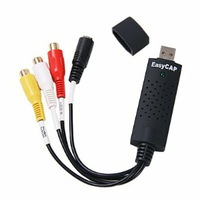

EasyCAP DC60 USB Audio und Videograbber
Dieser Artikel wurde für die folgenden Ubuntu-Versionen getestet:
Ubuntu 16.04 Xenial Xerus
Zum Verständnis dieses Artikels sind folgende Seiten hilfreich:
 Als EasyCAP DC60 werden verschiedene, zum Teil sehr günstige Modelle dieses Audio und Videograbbers verkauft. Für Verwirrung sorgt, dass es einerseits für die gleiche Hardware unterschiedliche Handelsnamen gibt, wie z.B.
Logilink VG0001(Produktinformation von Logilink.eu, Angebote bei geizhals.de
 , Angebote bei geizhals.at
, Angebote bei geizhals.at  )
)Mumbi (Angebote bei idealo.de
)Renkforce BR116 (Angebot bei Conrad.de
)weitere Handelsnamen sind möglich (Ebay)
Andererseits gibt es unter der Bezeichnung EasyCAP auch Modelle, die gleich aussehen, aber einen anderen Chipsatz haben (siehe unten Andere EasyCAP-Modelle).
Hinweis:
Wenn in der Beschreibung des Geräts ein Hinweis auf den Chipsatz/ die Modellbezeichnung "Syntek STK1160" zu finden ist, dann kann man davon ausgehen, dass es sich um einen "echten" EasyCAP DC60 Grabber handelt.
Das Modell VG0001A von Logilink wird zwar lt. Herstellerhomepage mit dem STK1160 ausgeliefert, jedoch ist der usbtv007-Chipsatz verbaut. Siehe auch Diskussion hier.
Im weiteren Artikel wird für dieses Gerät die eindeutige Bezeichnung STK1160 Easycap verwendet.
Das EasyCAP-Gerät identifizieren¶
Mit der Eingabe von
lsusb
in der Konsole sollte man, wenn das EasyCap-Gerät eingesteckt ist, u.a. folgende Information erhalten:
Bus 001 Device 002: ID 05e1:0408 Syntek Semiconductor Co., Ltd STK1160 Video Capture Device
Alle auf dem STK1160 Chip basierendem Modelle werden ab Kernel 2.6.38 Ubuntu 11.04 unterstützt.
Drei STK1160 Easycap (EasyCAP DC60) Modelle¶
 Es gibt verschiedene Geräte mit der gleichen USB ID die alle mit Ubuntu funktionieren:
Es gibt verschiedene Geräte mit der gleichen USB ID die alle mit Ubuntu funktionieren:
Das STK1160 Easycap Modell 001 mit 2x Audio, CVBS und S-Video und 48000 Hz (AC'97) Audio
das baugleiche Modell 001 mit nur 8000 Hz Audio (der AC'97 Soundchip fehlt; vor dem Anstecken lässt sich nicht überprüfen, ob es ein Gerät mit Soundchip = 48000Hz oder ohne Soundchip = 8000Hz ist)
und das STK1160 Easycap Modell 002 mit 4x CVBS, 1x 8000 Hz Audio. (ohne AC'97 Soundchip)
Überprüfen der Audioqualität¶
Mit der Eingabe des folgenden Befehls in der Kommandozeile kann man die Audioqualität des STK1160 Easycap (= das Vorhandensein eines AC'97 Soundchips) feststellen.
sudo lsusb -v -d 05e1:0408 | grep tSamFreq | sed -e "s,^.* ,,"
Bei eingestecktem STK1160 Easycap erscheint entweder die Ausgabe 48000 oder 8000.
Andere EasyCAP Modelle¶
Im Handel gibt es noch weitere EasyCAP Modelle mit einem anderen Chipsatz, die nicht vom Easycaptreiber unterstützt werden. Bekannt sind:
das Modell EasyCAP (oder EzCAP) DC60++ (wird auch als Modell 003 oder 006 bezeichnet; Beschreibung auf Amazon.com
 ). Ausgabe von lsusb:
). Ausgabe von lsusb: Bus XXX Device XXX: ID eb1a:2861 eMPIA Technology, Inc.. Es sollte unter Linux mit dem em28xx Treiber funktionieren.
das Modell EasyCAP mit Somagic Chip. Ausgabe von lsusb:
Bus XXX Device XXX: ID 1c88:0007 Somagic, Inc.oderBus XXX Device XXX: ID 1c88:003c Somagic, Inc.Dafür gibt es ein easycap-somagic-linux Treiberprojekt in einem fortgeschrittenem Stadium.
das Modell EasyCAP mit einem Fushicai USBTV007 Chip. Dies betrifft u.a. das Logilink VG0001A, obwohl auf der Homepage des Herstellers der STK1160-Chipsatz angegeben ist. Dies ist allerdings falsch. Ausgabe von lsusb:
Bus XXX Device XXX: ID 1b71:3002. Ab Kernel 3.11.x ist ein (experimenteller, nur NTSC Unterstützung) Treiber enthalten: http://linuxtv.org/wiki/index.php/Easycap#Making_it_work_4
Inbetriebnahme¶
Seit Ubuntu 13.04 ist im Kernel (Version 3.8.x) der neue stk1160 Treiber enthalten. Weitere Informationen zu den verschiedenen Treiber Versionen sind im Artikel EasyCAP DC60 Experteninformation zu finden.
USB 2.0 Anschluss¶
Der STK1160 Easycap funktioniert nur, wenn er direkt an einen USB 2.0 Anschluss angesteckt wird. Bei der Verwendung eines USB 1.1 Anschlusses ist die Geschwindigkeit der Datenübertragung zu gering! Auch bei einigen USB 3.0 Host kann es zu Problemen wegen limitierter Transferraten kommen. Ein USB 2.0 Hub kann hier Abhilfe schaffen
Mehrere STK1160 Easycap gleichzeitig betreiben¶
Der Easycaptreiber unterstützt den Betrieb von mehreren EasyCAPs parallel an einem Linux-System. Damit lässt sich z.B. ein umfangreiches Videoüberwachungssystem mit Zoneminder verwirklichen.
Wenn beim Betrieb von mehreren EasyCAPs Probleme mit der Datenübertragung am USB-Bus auftreten, kann man als Abhilfe jeden EasyCAP an einer eigenen USB Schnittstellenkarte anschließen. Für längere Verbindungen sollte auf jeden Fall ein aktives Kabel oder ein aktiver Hub verwendet werden.
Überprüfen der Funktion¶
Wenn der STK1160 Easycap eingesteckt wird, werden vom Kernelmodul der Geräteknoten /dev/video0 und eine ALSA "Soundkarte" erstellt. Beide müssen im Betrachter- bzw. Aufnahmeprogramm (z.B. MPlayer) angegeben werden. Siehe Videograbbing
Der stk1160 Treiber, der den Easycaptreiber im Kernel (ab 3.7) ersetzt, bringt eine verbesserte Stabilität und Bildqualität (kein Framedropping mehr) im Vergleich zum Easycaptreiber. Er hat aber auch ein paar Einschränkungen (siehe unten).
Nach dem Aufruf vom
dmesg
in der Konsole zeigen die folgenden Meldungen eine erfolgreiche Registrierung des STK1160 Easycap (stk1160 Version 0.9.3) an.
[25461.724315] usb 1-2.1: new high-speed USB device number 7 using ehci_hcd [25461.816802] usb 1-2.1: New USB device found, idVendor=05e1, idProduct=0408 [25461.816811] usb 1-2.1: New USB device strings: Mfr=1, Product=2, SerialNumber=0 [25461.816819] usb 1-2.1: Product: USB 2.0 Video Capture Controller [25461.816825] usb 1-2.1: Manufacturer: Syntek Semiconductor [25461.817258] usb 1-2.1: New device Syntek Semiconductor USB 2.0 Video Capture Controller @ 480 Mbps (05e1:0408, interface 0, class 0) [25461.817266] usb 1-2.1: video interface 0 found [25462.628302] saa7115 6-0025: saa7113 found (1f7113d0e100000) @ 0x4a (stk1160) [25464.164203] stk1160: driver ver 0.9.3 successfully loaded [25464.262035] stk1160: registers to NTSC like standard [25464.592336] stk1160 1-2.1:1.0: V4L2 device registered as video0
Aktivierung der Tonaufnahme¶
Das stk1160 Modul registriert eine stk1160-mixer ALSA Soundkarte. Der Audiostream des EasyCAP wird aber über die als STK1160 bezeichtete Soundkarte übertragen, die ebenfalls beim Einstecken registriert wird. Eine Liste der ALSA Soundkarten erhält man mit:
cat /proc/asound/cards
Beispielausgabe:
0 [Intel ]: HDA-Intel - HDA Intel
HDA Intel at 0xf0580000 irq 43
1 [stk1160mixer ]: stk1160 - stk1160-mixer
stk1160 ac97 codec mixer control
2 [STK1160 ]: USB-Audio - STK1160
Syntek STK1160 at usb-0000:00:1a.0-1.3, high speedUm den Ton zu hören, muss man nur bei ersten Verwenden (!) des EasyCAP mit alsamixer den Line Eingang der stk1160-mixer Soundkarte folgendermaßen aktivieren:
Starte
alsamixer
2. stk1160-mixer auswählen (mit F6)
3. Aufnahme auswählen (mit F4)
4. den Line Eingang auswählen (mit Leertaste)
Diese Prozedur lässt sich einfacher auch auf der Kommandozeile mit diesem Befehl erledigen:
amixer -c stk1160mixer sset Line unmute cap
Wichtig! Im Betracher- und Aufnahmeprogamm muss man jetzt die STK1160 Soundkarte oder ihre ALSA Nummer (nicht aber stk1160mixer !) auswählen, um den Ton zu hören.
Einschränkungen des stk1160 Treibers¶
Unterstützt nur AC'97 audio: Eine Tonaufnahme von STK1160 Easycap Modellen ohne AC'97 sound Chip (= 8000Hz Modelle) wird vom stk1160 Treiber (noch) nicht unterstützt. In diesem Fall empfiehlt es sich, das Audiokabel am Line-in (Mikrofon) Eingang der eingebauten Soundkrte anzuschließen, und das Aufnahmeprogramm dementsprechend einzustellen.
Kein Framescaling: Im Unterschied zum Easycaptreiber kann der stk1160 Treiber das Video nur im Vollformat (720x576 PAL) übertragen. Einige Programme (z.B. Zoneminder) funktionieren nicht korrekt wenn ein vom Treiber nicht unterstütztes Bildformat eingestellt ist.
Funktioniert nicht mit einigen STK1160 Easycap Modellen: In einigen STK1160 Easycap Modellen ist ein Videodecoder Chip (GM7113) verbaut, der zwar vom Easycaptreiber, derzeit aber noch nicht vom stk1160 Treiber unterstützt wird. In diesem Fall wird der Treiber nicht geladen. Ab Kernel 3.11 sollte dieser Fehler behoben sein.
Funktioniert derzeit nicht am Raspberry Pi: STK1160 Easycap Modelle und viele andere Grabber und Webcams, die unter Ubuntu bzw. unter Linux gnerell funktionieren, arbeiten derzeit nicht mit dem Raspberry Pi zusammen. (Ausnahme: Webcams die vom uvcvideo Treiber unterstützt werden funktionieren in den meisten Fällen am RPI.) Der Grund ist ein Problem mit dem Treiber für den im Raspberry Pi verbauten USB chip. Dieses Problem sollte in absehbarer Zeit behoben sein.
Erster Test mit MPlayer¶
Mit dem Aufruf des folgenden MPlayer-Befehls in der Kommandozeile kann man, bei angeschlossener Video- und Audioquelle, die Funktion des STK1160 Easycap testen. Um den entsprechenden Video-Eingang zu wählen muss die Ziffer nach dem Parameter "input=" angepasst werden (Zuordnung: siehe weiter unten).
mplayer tv:// -tv driver=v4l2:width=640:height=480:outfmt=uyvy:device=/dev/video0:input=1:fps=25:alsa:amode=1:forcechan=2:audiorate=8000:adevice=plughw.1,0:forceaudio:immediatemode=0 -ao sdl
Nutzung¶
Der STK1160 Easycap arbeitet mit den gängigen Mediaplayern unter Linux, die analoge Videoquellen (v4l2) unterstützen, zusammen. Er eignet sich zum Video-Betrachten genauso wie für die Aufnahme oder als Schnittstelle für eine Überwachungskamera.
Auch als externe Soundkarte für Tonaufnahmen (optimal nur das 48000 Hz Modell) kann er genutzt werden.
Anschlüsse des STK1160 Easycap¶
Modell 001¶
Das STK1160 Easycap Modell 001 hat einen CVBS (Composite Video, gelb) einen S-Video und zwei Audio (R und L) Anschlüsse.
Beim Anstecken des STK1160 Easycap wird ein
/dev/video0 Geräteknoten mit den Inputnummern: 0 (= CVBS) und 5 (= S-Video)
und die entsprechende ALSA Soundkarte
erstellt.
Modell 002¶
Das STK1160 Easycap Modell 002 hat vier CVBS (Composite Video, gelb) und einen Audio (Mono, weiß) Anschluss.
Beim Anstecken des STK1160 Easycap wird ein
/dev/video0 Geräteknoten mit den Inputnummern: 1, 2, 3, 4 (= CVBS 1 bis 4)
und die entsprechende ALSA Soundkarte
erstellt.
Einstellungen im Betrachter- und Aufnahmeprogramm¶
Auf der Wiki-Seite Videograbbing wird die Eingabe der Anschlusseinstellungen in die Programme sowie das Betrachten und Aufnehmen von Video und Audio mit einem Videograbber genau beschrieben.
Problembehebung¶
Bildprobleme mit MPlayer¶
Wenn mit MPlayer Video und Ton gemeinsam abgespielt werden, kann es zu Bildproblemen (ein "Standbild" pro Sekunde, wanderndes oder "verschmiertes" Bild) kommen. Meist hilft es den Parameter -ao sdl (-audio out, standard direct layer) an den MPLayer Befehl anzuhängen.
Wenn das keinen Effekt hat, kann man einen anderen Videotreiber für MPlayer auswählen. Die Parameter -vo sdl oder -vo xv an den MPlayer Befehl angehängt, können da Abhilfe schaffen.
- Erstellt mit Inyoka
-
 2004 – 2017 ubuntuusers.de • Einige Rechte vorbehalten
2004 – 2017 ubuntuusers.de • Einige Rechte vorbehalten
Lizenz • Kontakt • Datenschutz • Impressum • Serverstatus -
Serverhousing gespendet von